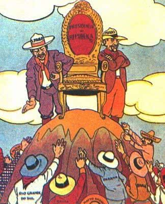
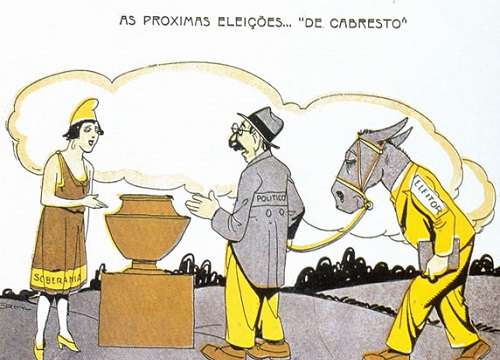

República Velha é a denominação dada à primeira fase da República brasileira, que se estendeu da Proclamação da República em 15 de
novembro de 1889 até a Revolução de 1930, liderada por Getúlio Vargas.
Tradicionalmente, a República brasileira é dividida em:
• República Velha (1889-1930)
• República Nova ou Era Vargas (1930-1945)
• República Contemporânea (1945 até nossos dias)
O primeiro período da República Velha ficou conhecido como República da Espada, em virtude da condição militar
dos dois primeiros presidentes do Brasil: Deodoro da Fonseca e Floriano Peixoto.
No dia seguinte à proclamação organizou-se no Brasil um Governo Provisório, chefiado por Deodoro da Fonseca, que deveria dirigir o país até
que fosse elaborada uma nova Constituição.
A primeira Constituição Republicana foi promulgada pelo Congresso Constituinte no dia 24 de fevereiro de 1891.
No dia seguinte, o congresso elegeu o Marechal Deodoro da Fonseca (1889-1891) - o primeiro presidente do Brasil e o vice Floriano Peixoto.
O novo governo trazia inúmeras divergências entre civis e militares. Contra Deodoro, já havia uma forte oposição no Congresso.
Assim, no dia 3 de novembro, Deodoro dissolveu o Congresso, que de imediato, organizou um contragolpe. Deodoro renunciou e entregou o poder
ao vice-presidente Floriano Peixoto.
Floriano Peixoto (1891-1894) assumiu o cargo apoiado de uma forte ala militar. A dissolução do Congresso foi suspensa. A constituição
determinava que fosse convocada novas eleições, o que não ocorreu.
Com essa atitude, Deodoro teve que enfrentar as revoltas das fortalezas de Lage e a de Santa Cruz, a Revolta Federativa e a
Revolta da Armada, que causou 10.000 mortos.
Floriano governou pela força, recebendo o apelido de “Marechal de Ferro”.

Marechal Deodoro da Fonseca
A República Oligárquica (1894-1930) se caracteriza pela alternância de poder entre as oligarquias cafeeiras dos estados de
Minas Gerais e de São Paulo.
Os presidentes desta época foram eleitos, na maioria das vezes, pelo Partido Republicano Paulista e o Partido Republicano Mineiro.

Capa da Revista Careta, Agosto de 1925, nº809. Os estados tentam, mas não conseguem alcançar o poder presidencial dominado por São Paulo e Minas Gerais.
Autor: Alfredo Storni.
Oligarquia
A palavra oligarquia vem do grego e significa “governo de poucos”. Assim, "oligarquia" designa um governo que é dominado por um grupo
de pessoas ou famílias que está unido pela mesma atividade econômica ou partido político.
As oligarquias acabam formando grupos fechados rechaçam qualquer forma de pensamento diferente. Desta forma, mesmo na democracia, é
possível haver casos de governos oligárquicos.
República Oligárquica no Brasil
No Brasil, o período é identificado quando as oligarquias rurais dominavam o cenário político brasileiro.
Normalmente, os presidentes eleitos eram do Partido Republicano Paulista (PRP), do Partido Republicano Mineiro (PRM). Esta prática era
denominada política do café-com-leite em alusão as maiores riquezas geradas por estes dois estados.
Também o Partido Republicano Rio-Grandense (PRR) teve importante papel nesta época. Este partido buscava desequilibrar a balança entre
esses dois estados, porém defendendo a oligarquia rural e as classes urbanas gaúchas.
Importante ressaltar que, nesta época, não existiam partidos políticos nacionais como atualmente e sim, partidos estaduais.
A exceção era o Partido Republicano Conservador (PRC) com partidários no Rio Grande do Sul e nos estados do nordeste.
Apesar de não ter conseguido eleger nenhum presidente, este partido tinha no senador gaúcho Pinheiro Machado seu grande representante na
política brasileira.
O primeiro presidente civil eleito, após Marechal Floriano Peixoto, foi Prudente de Morais, apoiado pela oligarquia cafeeira paulista.
Seu mandato durou de 1894 a 1898 quando foi substituído pelo também paulista Campos Salles, do Partido Republicano Paulista.
Características da República Oligárquica
Os presidentes eleitos usavam sua influência política para beneficiar os cafeicultores e garantir sua permanência no poder.
Deste modo era importante construir alianças estaduais como a Política dos Governadores e assegurar o resultado eleitoral através da
fraude. Esta prática ficou conhecida como Voto de Cabresto.
Os chefes locais que exerciam esta prática eram denominados coronéis, apesar de não estarem vinculados ao Exército. Assim, esta
política de conseguir votos pela força e troca de favores também é chamada de coronelismo.

Sátira sobre o voto de Cabresto
Prudentes de Morais
Prudente de Moraes foi o primeiro presidente civil da República. Assumiu o mandato em intensa agitação política. O “coronelismo”,
poder político que existiu desde o império, teve seu apogeu na República Velha.
Os coronéis, cujos títulos eram reminiscentes dos tempos da Guarda Nacional, eram chefes políticos que influenciavam as mais altas decisões
da administração federal.
O problema mais grave do governo de Prudente de Morais foi a “Guerra de Canudos” (1896 e 1897).
Campos Salles (1898-1902)
Campos Salles fez um acordo com as oligarquias agrárias, conhecido como “Política dos Governadores”, que consistia numa troca de favores e,
assim, só os candidatos de situação ganhavam as eleições.
Rodrigues Alves (1902-1906)
Rodrigues Alves urbanizou e saneou o Rio de Janeiro, enfrentou a Revolta da Vacina, o Convênio de Taubaté e a questão do Acre. Rodrigues Alves
foi reeleito em 1918, mas faleceu antes de tomar posse.
Afonso Pena (1906-1909)
Afonso Pena realizou melhorias na rede ferroviária, com a ligação de São Paulo e Mato Grosso, modificou as Forças Armadas, estimulou o
desenvolvimento da economia do país e incentivou a imigração.
O presidente faleceu antes de completar o mandato e foi substituído pelo vice Nilo Peçanha.
Nilo Peçanha (1909-1910)
Nilo Peçanha criou o Serviço de Proteção ao Índio (SPI), substituído, em 1967, pela FUNAI.
Hermes da Fonseca (1910-1914)
Hermes da Fonseca teve um governo marcado por convulsões sociais e políticas, tais como a “Revolta da Chibata”, a “Revolta dos Fuzileiros
Navais”, a “Revolta do Juazeiro” e a “Guerra do Contestado”.
Venceslau Brás (1914-1918)
Seu mandato coincidiu com o período da Primeira Guerra Mundial, da qual o Brasil participou lutando contra a Alemanha.
Em seu governo foi promulgado o “Código Civil Brasileiro”. Nessa época, a gripe espanhola fez vítimas no Brasil.
Epitácio Pessoa (1918-1922)
No governo de Epitácio Pessoa foram realizadas obras para combater a seca no Nordeste, fez reformas no Exército e promoveu a construção
de ferrovias.
Nessa época, cresceram as insatisfações contra a política do café com leite, como ficou conhecida a eleição de candidatos de São Paulo
e Minas Gerais.
Em 1922 ocorreu a Revolta do Forte de Copacabana. O Modernismo explodiu o Brasil com a Semana de Arte Moderna.
Arthur Bernardes (1922-1926)
Arthur Bernardes governou todo o período em estado de sítio, para fazer frente às agitações políticas e sublevações de caráter
tenentista. A situação econômica era crítica, inflação e queda no valor das exportações.
Durante esse período, sob o comando de Luís Carlos Prestes, a tropa revolucionária (que pretendia derrubar as oligarquias) percorreu
mais de 20.000 km pelo interior do País.
Washington Luís ( 1926-1930)
O presidente Washington Luís tentou dar impulso à economia, construindo estradas, como a Rio-São Paulo e a Rio-Petrópolis. Foi deposto
pela Revolução de 1930, pondo fim a política do café com leite.
O período da República Oligárquica se encerra quando Getúlio Vargas, candidato derrotado nas eleições de 1930, impede a posse de Júlio Prestes.
Com a Revolução de 1930 outros atores sociais entram no cenário político brasileiro modificando certas formas de governar.